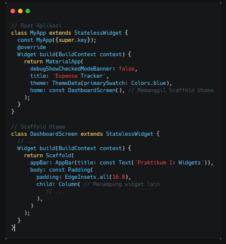
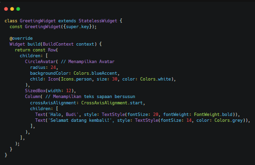
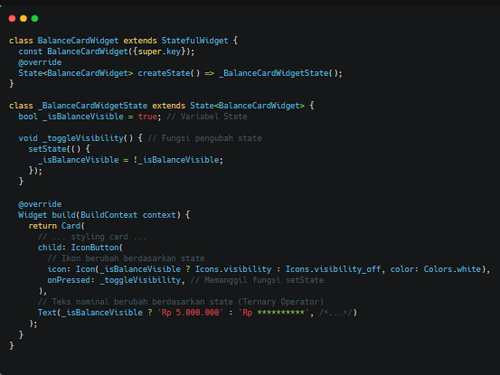

Laporan Praktikum: Aplikasi Mobile Widgets, Layouts and Styling
A. PENDAHULUAN
Pemahaman terhadap komponen dasar UI (User Interface) merupakan fondasi esensial dalam membangun aplikasi mobile yang fungsional. Pada modul ini, fokus utama adalah pengenalan ekosistem widget, diferensiasi antara Stateless dan Stateful Widget, serta teknik layouting terstruktur menggunakan Row, Column, dan Container. Seluruh konsep dasar tersebut diimplementasikan untuk membangun sebuah mockup antarmuka aplikasi pelacak keuangan (Expense Tracker). Tujuannya adalah untuk memahami siklus penyusunan komponen statis, pengelolaan state dinamis untuk fitur interaktif, dan bagaimana komponen-komponen tersebut dirangkai menjadi satu tata letak halaman yang rapi dan responsif.
B. LANGKAH KERJA
1. Inisialisasi Root Aplikasi dan Halaman Utama
Langkah pertama adalah membuat kerangka dasar aplikasi menggunakan MaterialApp sebagai root dan Scaffold sebagai struktur dasar halaman. Scaffold menyediakan komponen standar seperti AppBar dan body..

2. Membangun Komponen Statis (Stateless Widget)
Pembuatan bagian header (sapaan pengguna) menggunakan StatelessWidget karena datanya (nama pengguna dan avatar) bersifat tetap (statis) dan tidak memerlukan perubahan state setelah dirender. Komponen ini disusun menggunakan Row dan Column

3. Menerapkan Interaktivitas dengan Stateful Widget
Untuk fitur "Kartu Saldo" yang dapat menyembunyikan atau menampilkan nominal saldo, digunakan StatefulWidget. Fungsi setState() diimplementasikan untuk merender ulang UI (memperbarui teks saldo menjadi bintang-bintang atau sebaliknya) ketika tombol mata ditekan.

C. Layouting and Styling
1. Implementasi Tata Letak Scrollable
Seiring bertambahnya komponen pada halaman utama, terdapat risiko layar mengalami overflow (konten melebihi tinggi layar perangkat). Untuk mencegah hal ini, seluruh konten utama di dalam Scaffold dibungkus menggunakan SingleChildScrollView

2. Menyusun Tombol Aksi Horizontal (Row & Container)
Komponen tombol aksi (Pemasukan, Pengeluaran, Transfer) disusun secara horizontal. Widget Row digunakan dengan properti mainAxisAlignment: MainAxisAlignment.spaceEvenly untuk membagi ruang kosong sama rata di antara ketiga tombol. Setiap tombol dibungkus dalam Container untuk kustomisasi background dan border radius.

3. Membangun Daftar Riwayat Transaksi (Column & ListTile)
Untuk menampilkan daftar riwayat transaksi yang mengurut ke bawah secara rapi, digunakan kombinasi Column (sebagai penampung utama) dan ListTile. ListTile sangat ideal karena memiliki slot bawaan (leading, title, subtitle, trailing) yang sesuai dengan pola desain Material.

D. KESIMPULAN
Penggunaan Stateless Widget sangat efisien untuk merender elemen visual yang konstan, sementara Stateful Widget terbukti krusial untuk menangani interaksi pengguna dan mengelola pembaruan antarmuka secara real-time. Selain itu, penguasaan terhadap layout constraints (pembatas tata letak) sangat menentukan kualitas antarmuka. Kombinasi Row dan Column memberikan fleksibilitas tinggi dalam memosisikan elemen, sedangkan penggunaan widget pembantu seperti ListTile dan SingleChildScrollView terbukti sangat mempermudah standarisasi desain list sekaligus memastikan aplikasi tetap interaktif dan nyaman digulir pada berbagai ukuran layar.